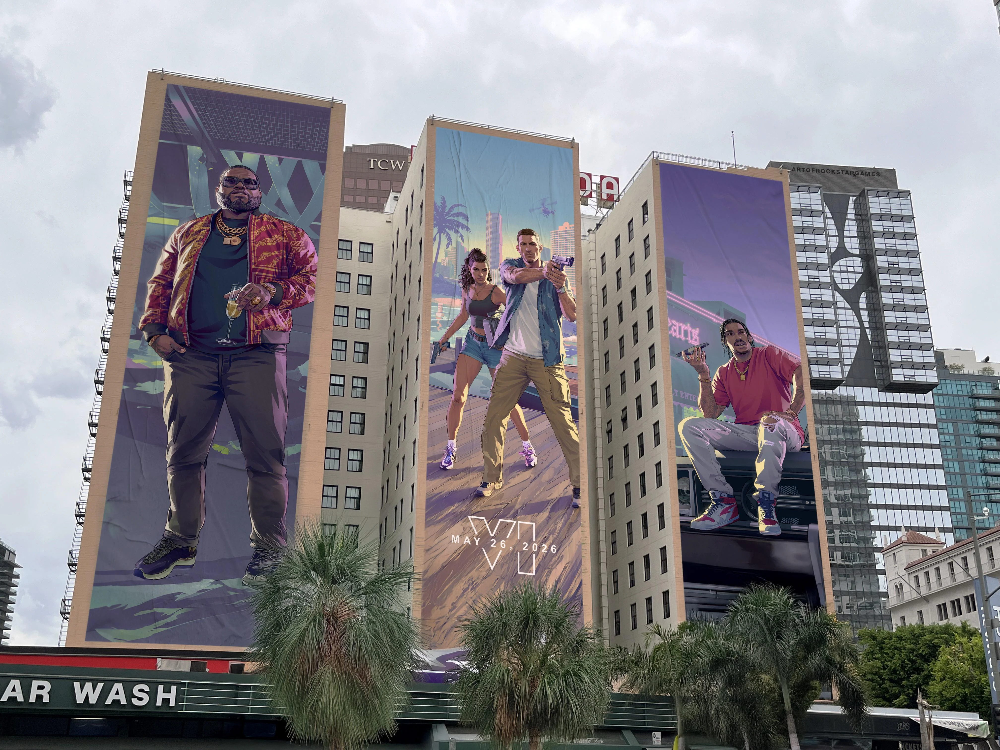

Fundação Cultural
Contagem Regressiva: A apenas 48 horas do lançamento de GTA VI

Prefeitura de Criciúma
FCC

O momento que a indústria dos videogames aguarda há mais de uma década finalmente chegou. A apenas dois dias do seu lançamento oficial, marcado para esta quinta-feira, 19 de novembro de 2026, o período de pré-lançamento de Grand Theft Auto VI (GTA VI) tem movimentado a comunidade global em níveis sem precedentes.
Uma longa jornada até LeonidaAnunciado originalmente no final de 2023 com uma janela de lançamento para 2025, GTA VI enfrentou dois adiamentos significativos. A data foi movida primeiro para maio de 2026, até ser finalmente cravada para 19 de novembro do mesmo ano. A ansiedade é palpável, especialmente com a confirmação de que o jogo levará os jogadores de volta à ensolarada Vice City, agora parte do vasto estado de Leonida, na pele da inédita dupla de protagonistas, Jason e Lucia.
O desafio do armazenamento e o pré-downloadPara garantir que todos estejam prontos quando o relógio bater meia-noite, a Rockstar Games liberou o pré-download digital no último dia 10 de novembro. A grande surpresa, no entanto, ficou por conta do tamanho colossal do arquivo: os jogadores precisam reservar até 212 GB de espaço no armazenamento de seus consoles para acomodar o blockbuster. Nas redes sociais, relatos de pessoas apagando grande parte de suas bibliotecas de jogos no PlayStation 5 e Xbox Series X|S são constantes nas últimas semanas.
O jogo será desbloqueado exatamente à meia-noite do horário local de cada região. No Brasil, os fãs poderão iniciar sua jornada pelo submundo criminoso de Leonida à 00h (horário de Brasília) do dia 19 de novembro.
Como o lançamento é escalonado globalmente, as regiões da Nova Zelândia e da Austrália serão as primeiras do mundo a ter acesso ao título, graças ao seu fuso horário. Essa janela reacendeu o uso do famoso "truque da Nova Zelândia", principalmente entre os jogadores de Xbox, que alteram a região do sistema de seus consoles para conseguir acessar o jogo horas antes do desbloqueio oficial em seus países de origem.
Enquanto os donos de consoles da atual geração celebram o iminente lançamento, a comunidade de PC continua no escuro. A Rockstar manteve sua tradição de mercado e, até o momento, não anunciou nenhuma data para a chegada de GTA VI aos computadores. A expectativa de analistas e fãs é que, assim como ocorreu com GTA V, a versão para PC chegue entre um e dois anos após a estreia nos consoles.
Com um escopo técnico massivo, promessas de um sistema avançado de policiamento criminal (Wanted Level) e uma forte ênfase na narrativa de sua nova dupla, as últimas 48 horas de espera coroam GTA VI como o maior e mais aguardado evento de entretenimento do ano. Resta apenas aguardar as horas finais no relógio.
Pressione "L" para habilitar o modo leitura
Este texto faz parte da página web, mas está de fora do cartão principal. Portanto, quando o usuário clicar em compartilhar, apenas o bloco branco acima será transformado em imagem e enviado para o Instagram.